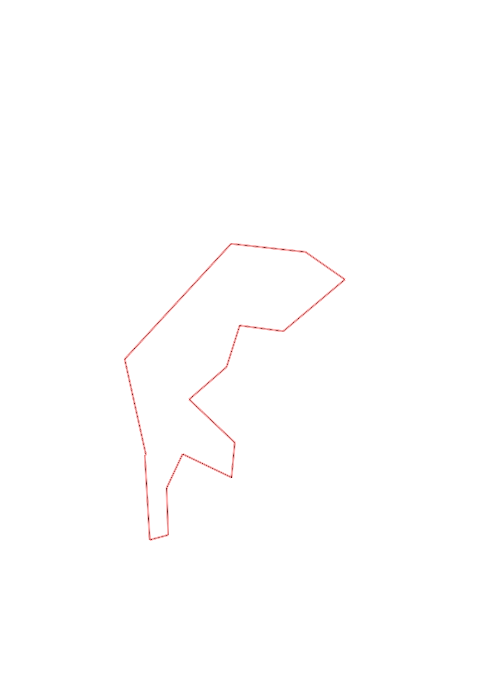
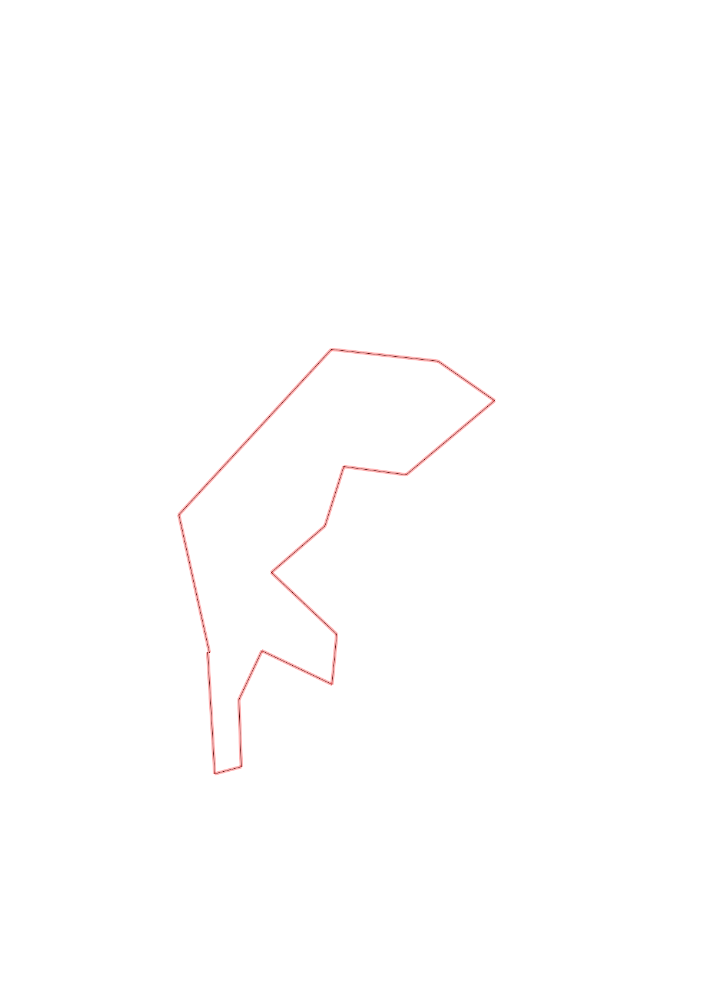

| Control |
Points |
Time Punched |
Distance |
Your Time |
Pace |
Place |
Fastest Time |
Median Time |
% Behind Fastest |
| 31 |
30 |
|
0.54 |
0:07:10 |
13:16 |
4 / 4 |
0:04:11 |
0:04:19 |
71% |
| 42 |
40 |
|
0.12 |
0:00:52 |
07:13 |
1 / 9 |
0:00:52 |
0:01:49 |
0% |
| 37 |
30 |
|
0.3 |
0:02:28 |
08:13 |
2 / 4 |
0:02:25 |
0:02:35 |
2% |
| 63 |
60 |
|
0.24 |
0:03:47 |
15:45 |
4 / 4 |
0:03:00 |
0:03:14 |
26% |
| 54 |
50 |
|
0.35 |
0:03:08 |
08:57 |
1 / 9 |
0:03:08 |
0:04:37 |
0% |
| 80 |
80 |
|
0.22 |
0:04:01 |
18:15 |
7 / 11 |
0:02:23 |
0:03:30 |
68% |
| 41 |
40 |
|
0.4 |
0:07:18 |
18:15 |
2 / 2 |
0:06:27 |
0:06:52 |
13% |
| 91 |
90 |
|
0.32 |
0:04:32 |
14:10 |
3 / 6 |
0:04:09 |
0:04:33 |
9% |
| 36 |
30 |
|
0.28 |
0:01:58 |
07:01 |
1 / 4 |
0:01:58 |
0:03:32 |
0% |
| 59 |
50 |
|
0.28 |
0:02:41 |
09:35 |
2 / 3 |
0:02:32 |
0:02:41 |
5% |
| 46 |
40 |
|
0.52 |
0:02:57 |
05:40 |
1 / 1 |
0:02:57 |
0:02:57 |
0% |
| 61 |
60 |
|
0.31 |
0:02:54 |
09:21 |
1 / 6 |
0:02:54 |
0:04:08 |
0% |
| 34 |
30 |
|
0.48 |
0:02:42 |
05:37 |
1 / 6 |
0:02:42 |
0:03:44 |
0% |
| 58 |
50 |
|
1.01 |
0:09:21 |
09:15 |
1 / 1 |
0:09:21 |
0:09:21 |
0% |
| Finish |
0 |
|
0.63 |
0:04:26 |
07:02 |
1 / 1 |
0:04:26 |
0:04:26 |
0% |
Total Distance Covered: 6.0km
Points Scored: 680
Late Penalty: -20
Final Score: 660
Total Time: 1hours 0minutes 15seconds
Efficiency: 110.0 points/km
 
